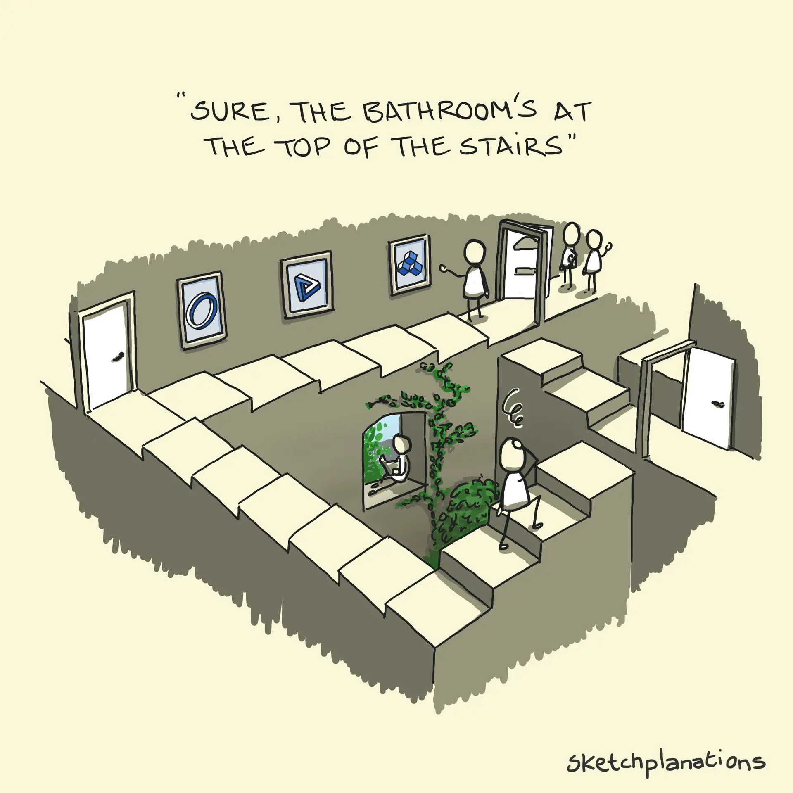

spring 2025: cs-1102-1

The impossible staircase, first designed by Oscar Reutersvärd,
and made popular by Lionel Penrose and M. C. Escher.
and made popular by Lionel Penrose and M. C. Escher.
Frequently Asked Questions:
Who is this course designed for?
This course is for beginners interested in developing a foundational understanding of computational thinking and computer science. While no prior coding experience is required, students with programming background will still benefit from the course's focus on algorithmic thinking, theoretical principles, focus on functional programming, and disciplinary breadth.
What tools or software will I need?
You will need:
- A computer with internet access,
- A text editor (such as GNU Emacs or Sublime 3) , Visual Studio Code, or an integrated development environment (IDE) for writing and running code,
- OCaml, Python, and LaTeX interpreters or compilers (you may use Overleaf for LaTeX), and
- Additional tools for extra credit assignments.
Do I need prior programming experience to take this course?
No.
How can I prepare for this course?
Please refer to Pre-course Reading for some suggestions.
What programming languages will we use?
The course primarily uses OCaml and Python. There will also be opportunities to explore other languages, such as C++, Rust, Java, Datalog, and SQL through the extra-credit assignments.
Why are we using OCaml?
OCaml mixes power and pragmatism. It encourages you to think about problems mathematically, focus on correctness, and write code that is elegant, concise, and robust. These skills translate well into other programming languages and problem-solving scenarios.
What if I struggle with coding or algorithms?
You are expected to take charge of your learning. If you find yourself struggling, you can:
- Take advantage of office hours to get help directly from the instructor or teaching assistants,
- Discussion with your peers and learn from them,
- Refer to the resources and recommended readings for more detailed explanations, and
- Practice to reinforce foundational concepts.
Yes. Attendance will be marked at 8:35 AM. Arriving late to class is marked as an unexcused absence.
Can I bring food or beverages to the class?
You may bring food and beverages to the class and consume them during the lecture as long as you ensure that you do not disturb your peers or the instructor.
What are the audit requirements for this course?
If you are auditing the course, you are expected to:
- Attend at least 70% of the lectures,
- Get at least 50% in the assignments, and
- Actively engage in discussions when possible.
What is the difference between the two sections of this course?
The two sections of this course are identical in content and structure. The assignments and exams for both the sections will remain the same. The difference lies in the instructor and the class schedule.
Will the grading be absolute or curved?
The grading policy will be absolute, meaning your grade will be based on your performance against fixed criteria, not compared to other students. This ensures that anyone who demonstrates mastery of the material can achieve the top grades, regardless of how others perform. The cut-offs for each grade will be announced soon.